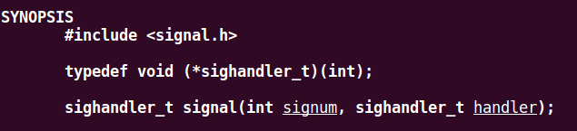

信号
中断被封装成信号，多个不同的中断被封装成一个信号。
| 层次 |
称呼 |
| 硬件层次 |
中断 |
| 操作系统层次 |
信号 |
| 应用程序层次 |
事件 |
信号可以用编号、名称表示，名称是编号的宏。
mask
过滤信号，每个进程都有对signal的mask，滤掉的就忽略，没有滤掉的就响应
signal()

返回信号处理程序的入口指针，signal()根据编号设置信号处理程序
实际是修改进程PCB中的信号表中的函数指针
注意唤醒的时刻，4和alarm有一秒停顿，alarm和5没有间隔，说明收到信号之后进程被立即唤醒
信号什么时候到来和signal()没有关系
kill()
给某个进程发信号
发9号信号给进程，表示终止进程，不能被拦截或忽略
exit()
杀死自己，返回0
进程软中断通信
信号是传送给进程的一种事件通知，Linux 系统中所有信号均定义在头文件 中。
信号发生时，Linux 内核可以采取下面 3 种动作之一：
编写程序，使用系统调用 fork()创建两个子进程，再用系统调用 signal()让父进程捕捉键盘上发出的中断信号(即按 ctrl+c 或是 ctrl+\键)，5 秒钟内若父进程未接收到这两个软中断的某一个，则父进程用系统调用 kill()向两个子进程分别发送软中断信号 SIGUSR1 和 SIGUSR2，子进程获得对应的软中断信号，然后分别输出下列信息后终止： Child process (pid=?) be killed！ 21Child process (pid=?) be killed！ 父进程调用wait()等待两个子进程终止后，输出以下信息，结束进程执行： Parent process (pid=?) finished！
1
2
3
4
5
6
7
8
9
10
11
12
13
14
15
16
17
18
19
20
21
22
23
24
25
26
27
28
29
30
31
32
33
34
35
36
37
38
39
40
41
42
43
44
45
46
47
48
49
50
51
52
53
54
55
56
57
58
59
60
61
62
63
64
65
66
67
68
69
| #include <stdio.h>
#include <sys/types.h>
#include <sys/wait.h>
#include <signal.h>
#include <unistd.h>
#include <stdlib.h>
void parent_stop() {
printf("Parent process (pid = %d) be killed (get SIGINT / SIGQUIT)\n", getpid());
exit(0);
}
void child_stop() {
printf("Chlid process (pid = %d) be killed\n", getpid());
exit(0);
}
int main() {
pid_t p1, p2;
p1 = fork();
if (p1) {
p2 = fork();
if (p2) {
signal(SIGINT, parent_stop);
signal(SIGQUIT, parent_stop);
printf("This is Parent process, pid = %d\n", getpid());
printf("parent sleep\n");
sleep(3);
printf("parent get up\n");
kill(p1, SIGUSR1);
printf("kill p1\n");
kill(p2, SIGUSR2);
printf("kill p2\n");
waitpid(p1, NULL, 0);
waitpid(p2, NULL, 0);
printf("Parent process %d terminated\n", getpid());
} else {
printf("This is chlid process 2, pid = %d\n", getpid());
signal(SIGUSR1, child_stop);
signal(SIGUSR2, child_stop);
printf("child2 sleep\n");
sleep(6);
printf("child2 get up\n");
}
} else {
printf("This is child process 1, pid = %d\n", getpid());
signal(SIGUSR1, child_stop);
signal(SIGUSR2, child_stop);
printf("child1 sleep\n");
sleep(6);
printf("child1 get up\n");
}
return 0;
}
|